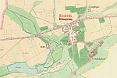
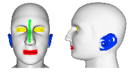
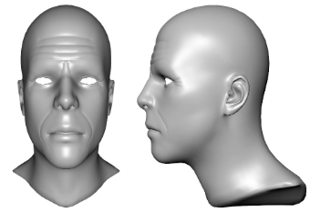
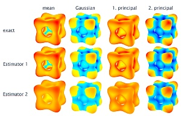
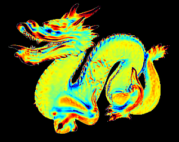
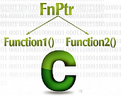
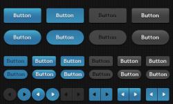
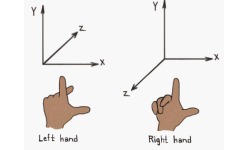

Main Publications
Algorithm for detecting cyclone and anticyclone centres from...
 30.10.2022 Journal of Spatial Science
30.10.2022 Journal of Spatial ScienceMartin Prantl, Michal Žák, David Prantl
Martin Prantl and Michal Žák and David Prantl; Algorithm for detecting cyclone and anticyclone centres from mean sea level pressure layer; Journal of Spatial Science, 2022, Taylor & Francis, DOI:10.1080/14498596.2022.2134221
Border Detection for Seamless Connection of Historical Cadastral...
 5.9.2021 ICDARLadislav Lenc, Martin Prantl, Jiří Martínek, Pavel Král
Lenc L., Prantl M., Martínek J., Král P. (2021) Border Detection for Seamless Connection of Historical Cadastral Maps. In: Barney Smith E.H., Pal U. (eds) Document Analysis and Recognition – ICDAR 2021 Workshops. ICDAR 2021. Lecture Notes in Computer Science, vol 12916. Springer, Cham. https://doi.org/10.1007/978-3-030-86198-8_4
Estimation of differential quantities using Hermite RBF
 12.9.2017 Visual Computer
12.9.2017 Visual ComputerMartin Prantl, Libor Váša
Estimation of differential quantities using Hermite RBF
Additional information and data: link
Screen Space Curvature and Ambient Occlusion
11.8.2017 VISIGRAPP 2016Martin Prantl, Libor Váša, Ivana Kolingerová
Screen Space Curvature and Ambient Occlusion
In: Braz J. et al. (eds) Computer Vision, Imaging and Computer Graphics Theory and Applications. VISIGRAPP 2016. Communications in Computer and Information Science, vol 693. Springer, Cham
Curvature-Based Feature Detection for Head Modeling
 11.6.2017 ICCS 2017Martin Prantl, Věra Skorkovská, Petr Martínek, Ivana Kolingerová
Curvature-Based Feature Detection for Head Modeling
Procedia Computer Science, Volume 108, 2017, Pages 2323-2327, ISSN 1877-0509
Erosion-Inspired Simulation of Aging for Deformation-Based...
 11.6.2017 ICCS 2017Věra Skorkovská, Martin Prantl, Petr Martínek, Ivana Kolingerová
Erosion-Inspired Simulation of Aging for Deformation-Based Head Modeling
Procedia Computer Science, Volume 108, 2017, Pages 425-434, ISSN 1877-0509
Mesh Statistics for Robust Curvature Estimation
 24.6.2016 SGP 2016Libor Váša, Petr Vaněček, Martin Prantl, Věra Skorkovská, Petr Martínek, Ivana Kolingerová
Mesh Statistics for Robust Curvature Estimation
Computer Graphics Forum, 2016, The Eurographics Association and John Wiley & Sons Ltd., ISSN: 1467-8659
Implementation available here
Fast Screen Space Curvature Estimation on GPU
 28.2.2016 VISIGRAPP 2016Martin Prantl, Libor Váša, Ivana Kolingerová
Fast Screen Space Curvature Estimation on GPU
In Proceedings of the 11th Joint Conference on Computer Vision, Imaging and Computer Graphics Theory and Applications (VISIGRAPP 2016) Volume 1: GRAPP, pp. 151-160 ISBN: 978-989-758-175-5, 2016.
Implementation available here
Read
Other Publications
C/C++ often used things
28.03.2018 perry.czSome things I sometimes use in C++ and dont want to google them all over again or they are just interesting. Templates, tips, pointers etc. Read
Swift C/C++ callbacks
10.05.2017 perry.czCalling C/C++ from Swift and Swift from C/C++ is not as trivial as it was in Objective-C. This page sumarize one possible approach. Read
Unity tips
17.11.2015 perry.czThis page sumarizes some things I have used and I maybe will use them again in another project. This page is to remember them and found them easily, there is no pattern or order in presented things. Read
PostGIS/PostgreSQL tips
31.10.2015 perry.czPostgreSQL and its extension for spatial data - PostGIS. Some tips and benchmarks I have performed during some development. Read
C++ function pointers
 29.09.2015 perry.czFunction pointers (sometimes known as delegates) are powefull tool in many languages. They offer the users flexibility and allow you to call functions from almost everywhere. I have been using them for trigger system in a state machine. Read
Image compression overview
14.09.2014 ARXIV.orgCompression plays a significant role in a data storage and a transmission. If we speak about a generall data compression, it has to be a lossless one. It means, we are able to recover the original data 1:1 from the compressed file. Multimedia data (images, video, sound...), are a special case. In this area, we can use something called a lossy compression. Read
Basic OpenAL sound manager for your project
26.08.2014 GAMEDEV.comAdding sound to your project can be a terrifying experience. You have to find the right library, right sound format and also put it all together. This tutorial is designed to be simple and yet a little robust. You can find full code attached to article as well, so you can learn directly from it. Read
Creating a Very Simple GUI System for Small Games - Part III
 21.05.2014 GAMEDEV.comThere are a lot of discussion threads that deal with the eternal problem "What GUI should I use?". We are going to answer this question by creating our own system from scratch in several parts tutorial Read
Creating a Very Simple GUI System for Small Games - Part II
13.05.2014 GAMEDEV.comThere are a lot of discussion threads that deal with the eternal problem "What GUI should I use?". We are going to answer this question by creating our own system from scratch in several parts tutorial Read
Creating a Very Simple GUI System for Small Games - Part I
06.05.2014 GAMEDEV.comThere are a lot of discussion threads that deal with the eternal problem "What GUI should I use?". We are going to answer this question by creating our own system from scratch in several parts tutorial Read
Perspective projections in LH and RH systems
 24.03.2014 GAMEDEV.comIf we looked more closely at DirectX and OpenGL, we can see one important difference in a projection. It doesn't matter if we use LH or RH system, in DirectX projection is mapped to interval [0, 1] while in OpenGL to [-1, 1]. What does that mean? Read